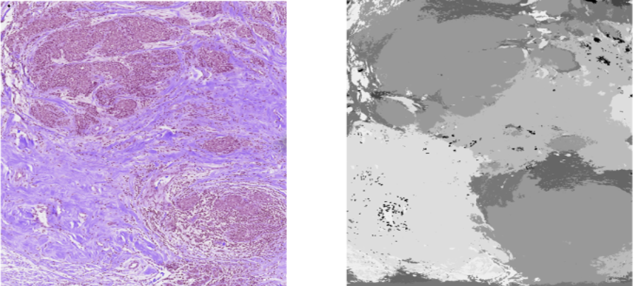

Unsupervised segmentation in digital pathology is a challenging problem. The F-Seg method leverages deep feature factorization (DFF) to extract meaningful concepts from image activations, enabling segmentation without labeled data. In this post, we explore the theoretical foundations of F-Seg, supported by mathematical formulations and practical Python code.
Given an input image \( I \), a deep network extracts activation maps \( A \in \mathbb{R}^{C \times H \times W} \), where \( C \) is the number of feature channels, and \( H \times W \) is the spatial resolution. Our goal is to decompose these activations into a set of interpretable components.
DFF achieves this via Non-Negative Matrix Factorization (NMF). The activation tensor is reshaped into a matrix \( A \in \mathbb{R}^{C \times (H \cdot W)} \), and we seek a factorization:
\[ A \approx W H \]
where:
The optimization problem solved by NMF is:
\[ \min_{W, H} \| A - W H \|_F^2 \quad \text{subject to} \quad W \geq 0, H \geq 0 \]
where \( \| \cdot \|_F \) denotes the Frobenius norm.
NMF is particularly well-suited for unsupervised segmentation because it ensures that both the basis components and the activations are non-negative. This leads to parts-based representations, which aligns well with the idea of decomposing an image into meaningful segments. Unlike SVD, which allows both positive and negative values, NMF produces interpretable components that resemble actual object parts. Furthermore, compared to other matrix factorization techniques like ICA or SVD, NMF is more robust in extracting localized features, which is crucial in image segmentation tasks where spatial coherence is important.
import numpy as np
import torch
from sklearn.decomposition import NMF
# Perform Deep Feature Factorization using NMF
def dff(activations: np.ndarray, n_components: int = 5):
batch_size, __, h, w = activations.shape
reshaped_activations = activations.transpose((1, 0, 2, 3)).reshape(activations.shape[1], -1)
reshaped_activations[np.isnan(reshaped_activations)] = 0
model = NMF(n_components=n_components, init='random', random_state=0)
W = model.fit_transform(reshaped_activations)
H = model.components_.reshape(n_components, batch_size, h, w)
return W, H.transpose((1, 0, 2, 3))Below is an example of an input image and the corresponding segmentation mask generated using DFF:
After factorization, we assign each pixel to the dominant factor, creating a segmentation mask. The following function overlays the segmentation results on the input image.
import matplotlib.pyplot as plt
def show_segmentation_on_image(img: np.uint8, segmentation: np.ndarray, colors=None, image_weight=0.5):
float_img = np.float32(img) / 255
n_categories = np.max(segmentation) + 1
if colors is None:
cmap = plt.cm.get_cmap('gist_rainbow')
colors = [np.array(cmap(i)[:3]) for i in np.linspace(0, 1, n_categories)]
mask = np.zeros_like(float_img)
for category in range(n_categories):
mask[segmentation == category] = colors[category]
return np.uint8((float_img * image_weight + mask * (1 - image_weight)) * 255)F-Seg leverages DFF for unsupervised segmentation. The extracted semantic concepts guide the clustering of image regions.
Once we obtain the matrix \( W \), we cluster the feature vectors into distinct semantic groups. Given a set of cluster centroids \( C \), each feature vector \( w_i \) is assigned to the nearest cluster using cosine similarity:
\[ \text{Label}(w_i) = \arg\min_j \frac{w_i \cdot C_j}{\|w_i\| \|C_j\|} \]
class FSeg:
def __init__(self, model, target_layer, reshape_transform=None):
self.model = model
self.target_layer = target_layer
self.reshape_transform = reshape_transform
self.activations_and_grads = ActivationsAndGradients(self.model, [self.target_layer], self.reshape_transform)
def get_activations(self, input_tensor: torch.tensor) -> np.ndarray:
with torch.no_grad():
self.activations_and_grads(input_tensor)
return self.activations_and_grads.activations[0].cpu().numpy()
def predict_on_single_image(self, input_tensor: torch.tensor, k: int):
activations = self.get_activations(input_tensor)
_, w = dff(activations, k)
segmentation = np.argmax(w[0], axis=0)
return segmentationF-Seg enables unsupervised segmentation by leveraging feature factorization. The method decomposes high-dimensional feature spaces into semantic components, making it useful for pathology and other domains where labeled data is scarce. Experiment with different values of \( k \) to observe its effect on segmentation granularity!